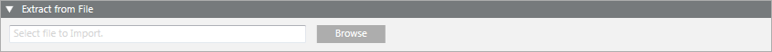
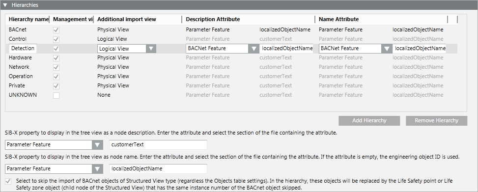
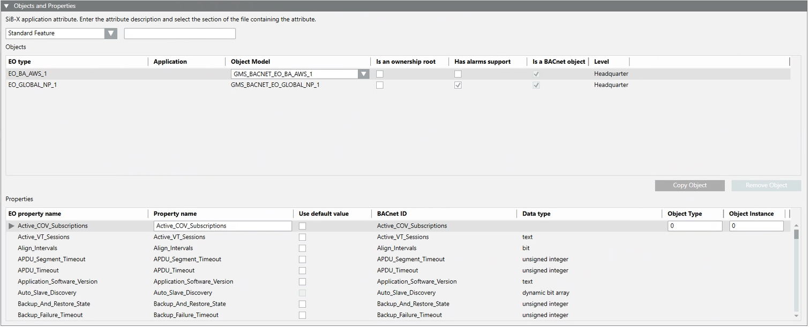
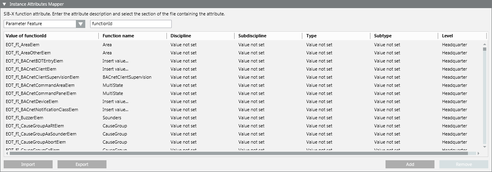
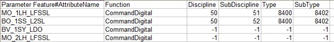

Import Rules Workspace
Selecting an import rules library block, authorized experts can configure the rules for importing the definitions of a given SiB-X family’s objects and the related system type functions associated to them (see Configuring SiB-X Import Rules in a Library).
Each Import Rules library block contains the rules of a specific product family (for example, BACnet).
Authorized experts can:
- Manage import rules and save the changes (
 )
) - Customize (
 ) import rules
) import rules
Import Rules Customization
This operation is available only for L2-Region, L3-Country, and L4-Project libraries, and only if the selected item resides at the specific customization level. It creates a copy of the structure of the library containing the selected import rules.
The newly created library structure does not contain any configuration items that can be added for customization purposes. However, the customization inherits import rules from the original library but:
- Inherited hierarchies and object and properties are read-only.
- Inherited instance attributes can be modified but cannot be deleted.
Import Rules Extraction
The Extract from File expander allows authorized experts to browse the file system and select the SiB-X file (CSV file) from which the import rules of a product family are extracted (see Extract Import Rules Data from a SiB-X File).
Import rules are automatically imported with a library. Anyway, to create new import rules for a new library or update the EO Types for the existing object and properties configuration it is necessary to extract the import rules data for a product family from a SiB-X file.

Hierarchies for Import Rules
For any SiB-X file extracted, the Hierarchies expander allows authorized experts to specify the hierarchies rules (see Configure Hierarchies for SiB-X Import Rules).

Hierarchies and Views
It is possible to define the view in System Browser to which every defined hierarchy of objects belongs and the root in System Browser for every hierarchy and for every view.
By default, each hierarchy is assigned to the Management View only. This means that by default each hierarchy is imported under Management View only. It is possible to specify rules for the hierarchies to import, that is, whether a hierarchy also belongs to another view (physical view, logical view, or user-defined view) or must not display in Management View. Such import rules are applied any time a configuration file is imported. Basically, they indicate not only the level where a hierarchy is imported but also suggest the correct view root to link for each specific hierarchy. When the physical view and logical view are indicated, the corresponding structures are automatically created when importing a SiB-X file based on the import rules and hierarchies definition during the import (see - Field Data Import).
Apart from modifying existing hierarchies, it is also possible to create new hierarchies or remove existing hierarchies.
Description and Name
As each hierarchy can belong to more than one view, it is also possible to define the Description and Name attributes by specifying the section of the SiB-X file and the corresponding name and description. After the import of a SiB-X file this results, for example, in the object being represented by its description in the Management View and by its name in the logical view.
SiB-X Property
It is possible to specify the SiB-X property and the corresponding description and name to display in System Browser.
Skipping BACnet Objects
It is possible to skip the import of BACnet objects of Structured View type (regardless of the Objects table settings). In the hierarchy, these objects will be replaced by the Life Safety point or Life Safety zone object (child node of the Structured View) that has the same instance number of the BACnet object skipped.
Objects and Properties Import Rules
Once a SiB-X file is extracted, the Objects and Properties expander allows authorized experts to specify the objects and properties import rules (see Configure Objects and Properties for SiB-X Import Rules).

Objects
This section presents all the EO types (objects) contained in the SiB-X file of a given family. They are clearly indicated as BACnet objects. For each object it is possible to:
- Select or enter a specific object model.
- Specify whether the BACnet object is an ownership root.
- Specify whether the BACnet object has the alarm support.
Apart from modifying the existing objects, it is also possible to:
- Create copies of these objects and define the Application parameter and the SiB-X application attribute.
- Remove any unwanted copied object.
Properties
This section presents all the properties available for the selected EO type (object) identified by the object property name, BACnet ID, and data type. For each property it is possible to:
- Modify the EO type property description.
- Specify whether the instance value of the selected property must be imported (available only for simple data types: int, uint, real, and string).
In addition, if the selected property allows specifying object type and object instance, it is also possible to:
- Allow the object type and instance redirection by overriding the corresponding data extracted from SIB-X file.
NOTE: The override of object type and instance number will affect the single object as well as multiple instances of the same object. Furthermore, object type and instance redirection is not available for the child elements of a property.
Instance Attributes Mapping for Import Rules
Once a SiB-X file is extracted, the Instance Attributes Mapper expander allows authorized experts to map the instance attributes (see Map Instance Attributes for SiB-X Import Rules).

SIB-X Function Attribute
The following features are available for the function key mapping:
- Standard Feature
- Parameter Feature
- BACnet Feature
- HmiFeature
It is possible to specify the name of the SiB-X function attribute and the section of SiB-X file that contains it.
Instance Attributes
The Instance attributes table is below the SiB-X function attribute. The configuration data for the instance attributes mapping can be imported from a CSV file.
For each instance attribute it is possible to specify:
- Value of the function ID
- Function name
- Discipline, sub-discipline, type, and sub-type
Apart from modifying existing instance attributes, it is also possible to create new instances or remove existing instances.
CSV File Format for Mapping Functions
Once the configuration is complete, it is possible to export the configuration data to a CSV file. This file can also be edited to modify the configuration data to import (see Map Instance Attributes for SiB-X Import Rules).
The following is an example of an instance attributes mapping CSV file opened with Microsoft Office Excel.

The first column of the first row contains the SiB-X section and the attribute used as key for the table. Its values are separated by the # character which is reserved and cannot be used in the section or attribute name. Each subsequent row contains the table data, where the Discipline, Subdiscipline, Type, and Subtype fields are indicated with their corresponding numeric value and -1 indicates object model value.